Análisis Exploratorio de Datos#
Librerias Importadas#
import pandas as pd
import seaborn as sns
import matplotlib.pyplot as plt
import numpy as np
import warnings
warnings.filterwarnings('ignore')
Información del dataset#
Creación del Dataset#
# Ruta al archivo CSV
rentacsv = '/content/drive/MyDrive/Rentabilidad_2016_2021.csv'
# Importar el archivo CSV a un DataFrame
df = pd.read_csv(rentacsv)
# Mostrar las primeras filas del DataFrame
print(df.head())
FECHA_CORTE TIPO_ENTIDAD NOMBRE_TIPO_ENTIDAD \
0 2016-01-01 5 SF-SOCIEDAD FIDUCIARIA
1 2016-01-01 5 SF-SOCIEDAD FIDUCIARIA
2 2016-01-01 85 COMISIONISTAS DE BOLSA DE VALORES
3 2016-01-01 85 COMISIONISTAS DE BOLSA DE VALORES
4 2016-01-01 85 COMISIONISTAS DE BOLSA DE VALORES
CODIGO_ENTIDAD NOMBRE_ENTIDAD TIPO_NEGOCIO \
0 20 Fiduciaria Corficolombiana S.A. 9
1 40 Fiducoldex 9
2 28 Credicorp Capital 9
3 21 Profesionales De Bolsa 9
4 14 Btg Pactual 9
NOMBRE_TIPO_PATRIMONIO SUBTIPO_NEGOCIO NOMBRE_SUBTIPO_PATRIMONIO \
0 FONDOS DE INVERSIÓN COLECTIVA 1 FIC DE TIPO GENERAL
1 FONDOS DE INVERSIÓN COLECTIVA 7 FONDOS DE CAPITAL PRIVADO
2 FONDOS DE INVERSIÓN COLECTIVA 1 FIC DE TIPO GENERAL
3 FONDOS DE INVERSIÓN COLECTIVA 7 FONDOS DE CAPITAL PRIVADO
4 FONDOS DE INVERSIÓN COLECTIVA 1 FIC DE TIPO GENERAL
CODIGO_NEGOCIO ... VALOR_UNIDAD_OPERACIONES_DIA_T APORTES_RECIBIDOS \
0 53954 ... 31051.177754 0.0
1 11207 ... 22230.562658 0.0
2 58919 ... 11330.202179 0.0
3 59859 ... 10053.318931 0.0
4 58699 ... 9326.594797 0.0
RETIROS_REDENCIONES ANULACIONES VALOR_FONDO_CIERRE_DIA_T \
0 0.0 0.0 9.303540e+11
1 0.0 0.0 1.370691e+11
2 0.0 0.0 1.142338e+10
3 0.0 0.0 7.128130e+09
4 0.0 0.0 5.055087e+08
NUMERO_INVERSIONISTAS RENTABILIDAD_DIARIA RENTABILIDAD_MENSUAL \
0 5213.0 4.925178 4.540000
1 4.0 0.000071 7.398338
2 32.0 1.049611 -4.692300
3 13.0 -3.038200 5.764400
4 17.0 -2.887314 145.398140
RENTABILIDAD_SEMESTRAL RENTABILIDAD_ANUAL
0 3.020000 3.190000
1 47.588044 25.129215
2 0.631400 3.371184
3 0.000000 0.000000
4 0.000000 0.000000
[5 rows x 26 columns]
Identificación NA’s#
df.info()
<class 'pandas.core.frame.DataFrame'>
RangeIndex: 1300007 entries, 0 to 1300006
Data columns (total 26 columns):
# Column Non-Null Count Dtype
--- ------ -------------- -----
0 FECHA_CORTE 1300007 non-null object
1 TIPO_ENTIDAD 1300007 non-null int64
2 NOMBRE_TIPO_ENTIDAD 1300007 non-null object
3 CODIGO_ENTIDAD 1300007 non-null int64
4 NOMBRE_ENTIDAD 1300007 non-null object
5 TIPO_NEGOCIO 1300007 non-null int64
6 NOMBRE_TIPO_PATRIMONIO 1300007 non-null object
7 SUBTIPO_NEGOCIO 1300007 non-null int64
8 NOMBRE_SUBTIPO_PATRIMONIO 1300007 non-null object
9 CODIGO_NEGOCIO 1300007 non-null int64
10 NOMBRE_PATRIMONIO 1300007 non-null object
11 PRINCIPAL_COMPARTIMENTO 1300007 non-null int64
12 TIPO_PARTICIPACION 1300007 non-null int64
13 RENDIMIENTOS_ABONADOS 1300007 non-null float64
14 PRECIERRE_FONDO_DIA_T 1300007 non-null float64
15 NUMERO_UNIDADES_FONDO_CIERRE_OPER_DIA_T_ANTERIOR 1300007 non-null float64
16 VALOR_UNIDAD_OPERACIONES_DIA_T 1300007 non-null float64
17 APORTES_RECIBIDOS 1300007 non-null float64
18 RETIROS_REDENCIONES 1300007 non-null float64
19 ANULACIONES 1300007 non-null float64
20 VALOR_FONDO_CIERRE_DIA_T 1300007 non-null float64
21 NUMERO_INVERSIONISTAS 1300007 non-null float64
22 RENTABILIDAD_DIARIA 1300007 non-null float64
23 RENTABILIDAD_MENSUAL 1300007 non-null float64
24 RENTABILIDAD_SEMESTRAL 1300007 non-null float64
25 RENTABILIDAD_ANUAL 1300007 non-null float64
dtypes: float64(13), int64(7), object(6)
memory usage: 257.9+ MB
df.isna().sum()
| 0 | |
|---|---|
| FECHA_CORTE | 0 |
| TIPO_ENTIDAD | 0 |
| NOMBRE_TIPO_ENTIDAD | 0 |
| CODIGO_ENTIDAD | 0 |
| NOMBRE_ENTIDAD | 0 |
| TIPO_NEGOCIO | 0 |
| NOMBRE_TIPO_PATRIMONIO | 0 |
| SUBTIPO_NEGOCIO | 0 |
| NOMBRE_SUBTIPO_PATRIMONIO | 0 |
| CODIGO_NEGOCIO | 0 |
| NOMBRE_PATRIMONIO | 0 |
| PRINCIPAL_COMPARTIMENTO | 0 |
| TIPO_PARTICIPACION | 0 |
| RENDIMIENTOS_ABONADOS | 0 |
| PRECIERRE_FONDO_DIA_T | 0 |
| NUMERO_UNIDADES_FONDO_CIERRE_OPER_DIA_T_ANTERIOR | 0 |
| VALOR_UNIDAD_OPERACIONES_DIA_T | 0 |
| APORTES_RECIBIDOS | 0 |
| RETIROS_REDENCIONES | 0 |
| ANULACIONES | 0 |
| VALOR_FONDO_CIERRE_DIA_T | 0 |
| NUMERO_INVERSIONISTAS | 0 |
| RENTABILIDAD_DIARIA | 0 |
| RENTABILIDAD_MENSUAL | 0 |
| RENTABILIDAD_SEMESTRAL | 0 |
| RENTABILIDAD_ANUAL | 0 |
Infromación General#
df.describe()
| TIPO_ENTIDAD | CODIGO_ENTIDAD | TIPO_NEGOCIO | SUBTIPO_NEGOCIO | CODIGO_NEGOCIO | PRINCIPAL_COMPARTIMENTO | TIPO_PARTICIPACION | RENDIMIENTOS_ABONADOS | PRECIERRE_FONDO_DIA_T | NUMERO_UNIDADES_FONDO_CIERRE_OPER_DIA_T_ANTERIOR | VALOR_UNIDAD_OPERACIONES_DIA_T | APORTES_RECIBIDOS | RETIROS_REDENCIONES | ANULACIONES | VALOR_FONDO_CIERRE_DIA_T | NUMERO_INVERSIONISTAS | RENTABILIDAD_DIARIA | RENTABILIDAD_MENSUAL | RENTABILIDAD_SEMESTRAL | RENTABILIDAD_ANUAL | |
|---|---|---|---|---|---|---|---|---|---|---|---|---|---|---|---|---|---|---|---|---|
| count | 1.300007e+06 | 1.300007e+06 | 1300007.0 | 1.300007e+06 | 1.300007e+06 | 1.300007e+06 | 1.300007e+06 | 1.300007e+06 | 1.300007e+06 | 1.300007e+06 | 1.300007e+06 | 1.300007e+06 | 1.300007e+06 | 1.300007e+06 | 1.300007e+06 | 1.300007e+06 | 1.300007e+06 | 1.300007e+06 | 1.300007e+06 | 1.300007e+06 |
| mean | 3.442933e+01 | 2.710196e+01 | 9.0 | 2.770966e+00 | 5.027881e+04 | 1.199993e+00 | 6.500195e+02 | 1.890310e+07 | 1.611441e+11 | 6.598879e+11 | 1.157358e+05 | 3.088307e+09 | 3.037605e+09 | -2.286747e+07 | 1.611709e+11 | 5.209843e+03 | 3.180150e+26 | 2.096465e+26 | 4.633448e+16 | 7.713861e+07 |
| std | 3.865099e+01 | 1.885390e+01 | 0.0 | 2.673459e+00 | 2.554373e+04 | 3.999947e-01 | 1.497363e+02 | 2.155705e+09 | 6.371159e+11 | 5.204966e+13 | 3.362218e+06 | 2.243997e+10 | 2.217504e+10 | 1.728039e+09 | 6.371320e+11 | 2.499272e+06 | 1.035133e+29 | 2.737937e+28 | 5.282958e+19 | 8.770580e+10 |
| min | 5.000000e+00 | 3.000000e+00 | 9.0 | 1.000000e+00 | 2.713000e+03 | 1.000000e+00 | 5.000000e+00 | -7.100906e+11 | -5.865346e+10 | 0.000000e+00 | 0.000000e+00 | -1.997390e-01 | -1.249060e+07 | -6.499977e+11 | -5.642586e+10 | 0.000000e+00 | -1.080231e+14 | -1.113881e+04 | -2.475177e+02 | -1.534884e+02 |
| 25% | 5.000000e+00 | 1.600000e+01 | 9.0 | 1.000000e+00 | 2.574300e+04 | 1.000000e+00 | 5.040000e+02 | -1.622053e+04 | 4.669345e+09 | 3.663416e+05 | 9.997565e+03 | 0.000000e+00 | 0.000000e+00 | 0.000000e+00 | 4.676455e+09 | 3.000000e+00 | -1.652880e-01 | -3.054225e-01 | 0.000000e+00 | 0.000000e+00 |
| 50% | 5.000000e+00 | 2.100000e+01 | 9.0 | 1.000000e+00 | 5.892100e+04 | 1.000000e+00 | 7.020000e+02 | 7.118279e+05 | 2.507828e+10 | 1.808714e+06 | 1.201734e+04 | 0.000000e+00 | 0.000000e+00 | 0.000000e+00 | 2.508887e+10 | 2.200000e+01 | 2.646109e+00 | 3.810992e+00 | 3.957519e+00 | 3.763481e+00 |
| 75% | 8.500000e+01 | 3.100000e+01 | 9.0 | 7.000000e+00 | 6.740300e+04 | 1.000000e+00 | 8.000000e+02 | 1.039454e+07 | 1.014578e+11 | 7.891836e+06 | 1.668354e+04 | 1.211798e+06 | 4.454755e+06 | 0.000000e+00 | 1.014693e+11 | 2.360000e+02 | 6.653085e+00 | 7.502263e+00 | 7.285516e+00 | 6.718203e+00 |
| max | 8.700000e+01 | 9.700000e+01 | 9.0 | 7.000000e+00 | 1.033280e+05 | 2.000000e+00 | 8.180000e+02 | 5.183557e+11 | 1.589805e+13 | 7.590329e+15 | 7.322737e+08 | 1.013510e+13 | 1.013500e+13 | 4.572483e+11 | 1.589993e+13 | 2.849427e+09 | 5.878116e+31 | 6.435146e+30 | 6.023515e+22 | 1.000000e+14 |
df.describe(include='object')
| FECHA_CORTE | NOMBRE_TIPO_ENTIDAD | NOMBRE_ENTIDAD | NOMBRE_TIPO_PATRIMONIO | NOMBRE_SUBTIPO_PATRIMONIO | NOMBRE_PATRIMONIO | |
|---|---|---|---|---|---|---|
| count | 1300007 | 1300007 | 1300007 | 1300007 | 1300007 | 1300007 |
| unique | 2192 | 3 | 46 | 1 | 5 | 660 |
| top | 2021-12-30 | SF-SOCIEDAD FIDUCIARIA | Alianza Fiduciaria S.A. | FONDOS DE INVERSIÓN COLECTIVA | FIC DE TIPO GENERAL | FONDO ABIERTO ALIANZA |
| freq | 808 | 822895 | 203419 | 1300007 | 869357 | 25206 |
# Seleccionar solo las columnas numéricas
df_numeric = df.select_dtypes(include=["float64"])
# Calcular la matriz de correlación
corr = df_numeric.corr()
# Crear el mapa de calor
plt.figure(figsize=(12, 8))
sns.heatmap(corr, annot=True, fmt=".2f", cmap="coolwarm", linewidths=0.5, vmin=-1, vmax=1)
# Título y visualización
plt.title("Mapa de Correlación entre Variables Numéricas")
plt.show()
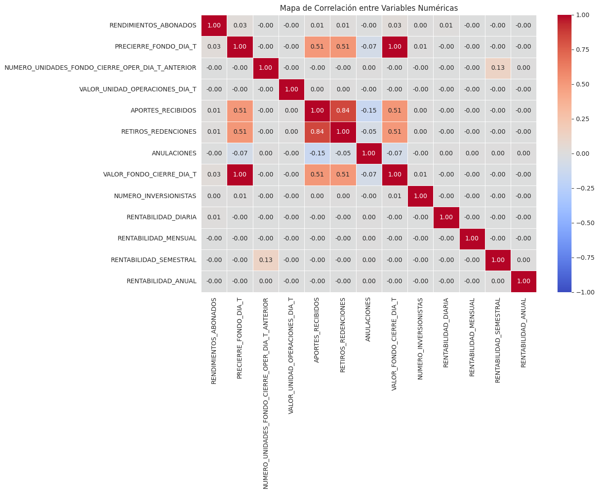
Análisis Univariado#
Tipo de Entidad (TIPO_ENTIDAD)#
sns.set_style("whitegrid")
# Contar las frecuencias de cada categoría y ordenar de mayor a menor
orden = df['NOMBRE_TIPO_ENTIDAD'].value_counts().index
# Crear el gráfico de barras horizontal
plt.title('Tipo de entidad')
sns.countplot(y=df['NOMBRE_TIPO_ENTIDAD'], order=orden, orient='h', palette='viridis')
plt.ylabel('Entidad')
plt.xlabel('Frequency')
plt.show()
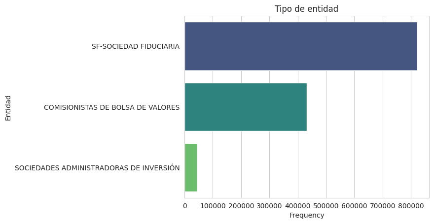
Principal Compartimento (PRINCIPAL_COMPARTIMENTO)#
sex_count = df["PRINCIPAL_COMPARTIMENTO"].value_counts()
plt.pie(sex_count, labels = sex_count.index, autopct="%1.1f%%", startangle=90, colors = ["darkcyan", "steelblue"] )
plt.title("Distribución Compartimento Principal")
plt.show()
df["PRINCIPAL_COMPARTIMENTO"].value_counts()
df["PRINCIPAL_COMPARTIMENTO"].value_counts(normalize=True) * 100
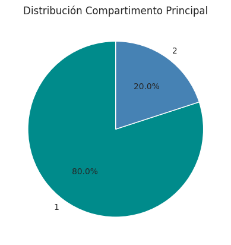
| proportion | |
|---|---|
| PRINCIPAL_COMPARTIMENTO | |
| 1 | 80.000723 |
| 2 | 19.999277 |
Número de unidades de fondo registradas al cierre del día anterior a la fecha (NUMERO_UNIDADES_FONDO_CIERRE_OPER_DIA_T_ANTERIOR)#
df["log_NUMERO_UNIDADES"] = np.log1p(df["NUMERO_UNIDADES_FONDO_CIERRE_OPER_DIA_T_ANTERIOR"])
plt.figure(figsize=(8, 5))
sns.histplot(df["log_NUMERO_UNIDADES"].dropna(), bins=50, color="darkcyan")
plt.xlabel("Log( Número de Unidades + 1 )")
plt.ylabel("Frecuencia")
plt.title("Dsitrbución de Número de Unidades")
plt.show()
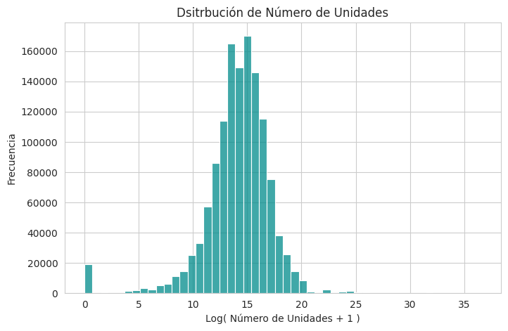
Se uso transformación logaritmica en los datos a manera de poder visualizar de mejor forma las distribución de los datos.
Rendimientos Abonados (RENDIMIENTOS_ABONADOS)#
df["log_rendi"] = np.log1p(df["RENDIMIENTOS_ABONADOS"])
plt.figure(figsize=(8, 5))
sns.histplot(df["log_rendi"].dropna(), bins=50, color="seagreen")
plt.xlabel("Log(Rendimientos Abonados + 1 )")
plt.ylabel("Frecuencia")
plt.title("Dsitrbución de Rendimientos Abonados")
plt.show()
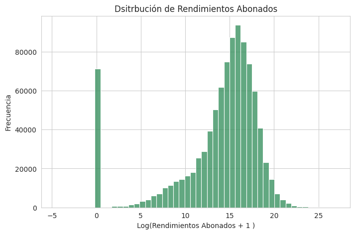
Distribución de Rentalidades (Diaria, Mensual, Semestral, Anual)#
fig, axes = plt.subplots(2, 2, figsize=(14, 10))
# Columnas y títulos
cols = ["RENTABILIDAD_DIARIA", "RENTABILIDAD_MENSUAL", "RENTABILIDAD_SEMESTRAL", "RENTABILIDAD_ANUAL"]
titles = ["Diaria", "Mensual", "Semestral", "Anual"]
# Crear histogramas con transformación logarítmica
for i, ax in enumerate(axes.flatten()):
sns.histplot(np.log1p(df[cols[i]]), bins=50, kde=True, ax=ax, color="steelblue")
ax.set_title(f"Distribución Logarítmica de Rentabilidad {titles[i]}")
ax.set_xlabel(f"log(1 + {cols[i]})") # Etiqueta del eje X con la transformación aplicada
# Ajustar diseño
plt.tight_layout()
plt.show()
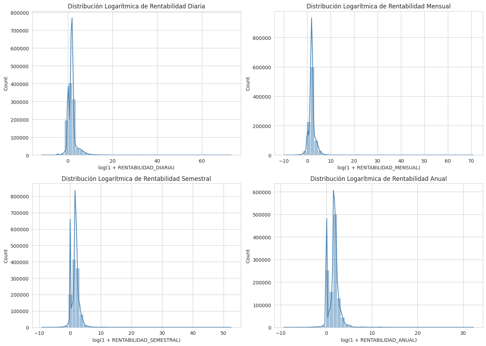
Análisis Bivariado#
Número de Inversionistas por Subtipo de Negocio#
# Filtrar los subtipos de negocio relevantes
subtipos = [1, 2, 3, 6, 7]
df_filtrado = df[df["SUBTIPO_NEGOCIO"].isin(subtipos)].copy()
# Aplicar transformación logarítmica (sumar 1 para evitar log(0))
df_filtrado["LOG_NUMERO_INVERSIONISTAS"] = np.log1p(df_filtrado["NUMERO_INVERSIONISTAS"])
# Crear diccionario de nombres de subtipos
mapeo_nombres = df_filtrado.drop_duplicates("SUBTIPO_NEGOCIO").set_index("SUBTIPO_NEGOCIO")["NOMBRE_SUBTIPO_PATRIMONIO"].to_dict()
# Crear subgráficos (Antes y Después de transformación logarítmica)
fig, axes = plt.subplots(1, len(subtipos), figsize=(20, 6), sharey=False)
# Paleta de colores
palette = sns.color_palette("viridis", len(subtipos))
for i, subtipo in enumerate(subtipos):
sns.boxplot(data=df_filtrado[df_filtrado["SUBTIPO_NEGOCIO"] == subtipo],
y="LOG_NUMERO_INVERSIONISTAS",
ax=axes[i],
color=palette[i])
axes[i].set_title(mapeo_nombres.get(subtipo, f"Subtipo {subtipo}"))
axes[i].set_xlabel("")
axes[i].set_ylabel("Log(Inversionistas)")
# Ajustar diseño y mostrar
plt.suptitle("Distribución (Log) del Número de Inversionistas por Subtipo de Negocio", fontsize=16)
plt.tight_layout()
plt.show()
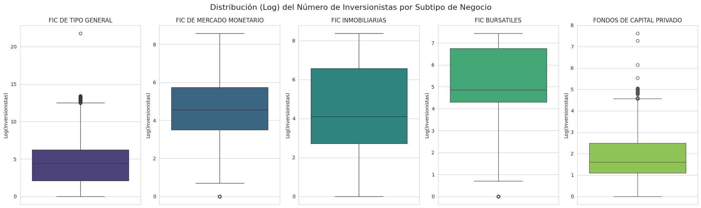
Aportes Recibidos por Tipo de Entidad#
# Agrupar por subtipo de negocio y calcular la suma de aportaciones y retiros
df_grouped = df.groupby("TIPO_ENTIDAD")["APORTES_RECIBIDOS"].sum().reset_index()
# Transformar los datos para que seaborn lo entienda mejor
df_melted = df_grouped.melt(id_vars="TIPO_ENTIDAD", var_name="Tipo", value_name="Monto")
# Crear el gráfico
plt.figure(figsize=(10,6))
sns.barplot(data=df_melted, x="TIPO_ENTIDAD", y="Monto", hue="Tipo", palette='viridis')
plt.yscale("log")
# Personalización
plt.xlabel("Subtipo de Negocio")
plt.ylabel("Monto Total")
plt.title("Distribución Aportes Recibidos por Subtipo de Negocio")
plt.xticks(rotation=45)
# Mostrar gráfico
plt.show()
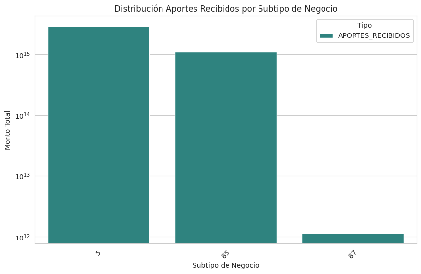
Relación entre Valor total del fondo al cierre del día T y Precio de cierre del fondo en el día T#
sns.scatterplot(data=df, x="VALOR_FONDO_CIERRE_DIA_T", y="PRECIERRE_FONDO_DIA_T", color='seagreen')
plt.xlabel("Valor Fondo Cierre")
plt.ylabel("Precierre")
plt.title("Relación entre Valor Fondo Cierre y Precierre Fondo")
plt.show()
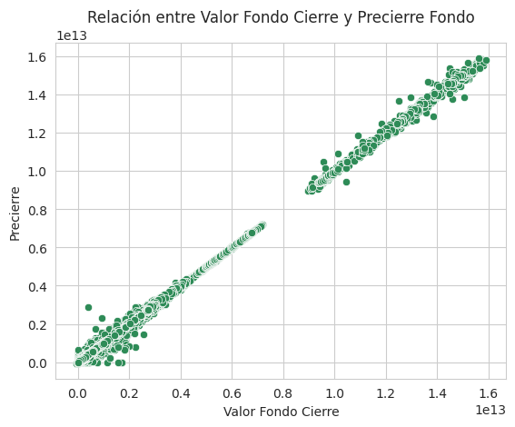
Rentabilidad Anual por el Tipo de Entidad#
# Aplicar transformación logarítmica a las variables
df["log_RENTABILIDAD_ANUAL"] = np.log1p(df["RENTABILIDAD_ANUAL"])
# Graficar boxplots con los valores transformados
g = sns.catplot(
data=df,
x="log_RENTABILIDAD_ANUAL",
col="NOMBRE_TIPO_ENTIDAD",
kind="box",
col_wrap=3,
height=4,
sharex=True,
color='seagreen'
)
# Ajustar títulos
g.set_axis_labels("Log(Rentabilidad Anual (%) Operaciones + 1)", "")
g.set_titles("{col_name}")
plt.show()
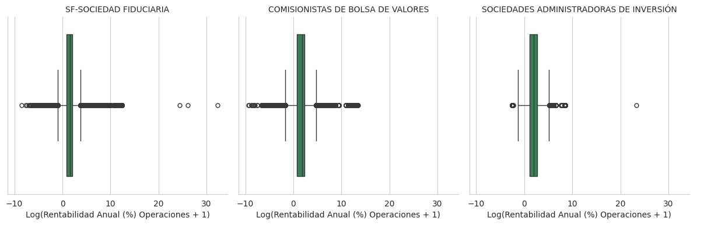
Se usó la transformación logaritmica en los datos de rentabilidad anual para mejorar la visualización de su distribución.
Anulaciones por Mes (Fecha de Corte)#
# Convertir fecha a datetime
df["FECHA_CORTE"] = pd.to_datetime(df["FECHA_CORTE"], dayfirst=True, errors='coerce')
# Crear columnas de Año y Mes
df["AÑO"] = df["FECHA_CORTE"].dt.year
df["MES"] = df["FECHA_CORTE"].dt.month
# Agrupar por Año y Mes
df_grouped = df.groupby(["AÑO", "MES"])["ANULACIONES"].mean().reset_index()
# Separar en dos grupos de años
grupo1 = df_grouped[df_grouped["AÑO"].between(2016, 2018)]
grupo2 = df_grouped[df_grouped["AÑO"].between(2019, 2021)]
# Crear figura con dos subgráficos
fig, axes = plt.subplots(1, 2, figsize=(14, 6), sharey=True)
# Gráfico 1 (2016-2020)
sns.lineplot(
data=grupo1, x="MES", y="ANULACIONES", hue="AÑO", marker="o", palette="viridis", ax=axes[0]
)
axes[0].set_title("Anulaciones por Mes (2016-2018)")
axes[0].set_xlabel("Mes")
axes[0].set_ylabel("Promedio de Anulaciones")
axes[0].set_xticks(range(1, 13))
axes[0].set_xticklabels(["Ene", "Feb", "Mar", "Abr", "May", "Jun", "Jul", "Ago", "Sep", "Oct", "Nov", "Dic"])
axes[0].legend(title="Año")
# Gráfico 2 (2021-2025)
sns.lineplot(
data=grupo2, x="MES", y="ANULACIONES", hue="AÑO", marker="o", palette="deep", ax=axes[1]
)
axes[1].set_title("Anulaciones por Mes (2019-2021)")
axes[1].set_xlabel("Mes")
axes[1].set_ylabel("")
axes[1].set_xticks(range(1, 13))
axes[1].set_xticklabels(["Ene", "Feb", "Mar", "Abr", "May", "Jun", "Jul", "Ago", "Sep", "Oct", "Nov", "Dic"])
axes[1].legend(title="Año")
# Ajustar diseño y mostrar
plt.tight_layout()
plt.show()
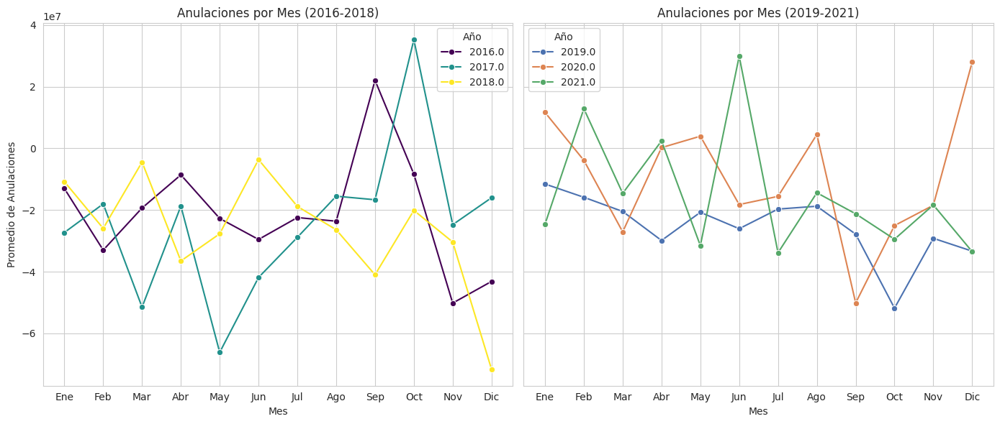
Retiros y Redenciones por Mes#
# Convertir fecha a datetime
df["FECHA_CORTE"] = pd.to_datetime(df["FECHA_CORTE"], dayfirst=True, errors='coerce')
# Crear columnas de Año y Mes
df["AÑO"] = df["FECHA_CORTE"].dt.year
df["MES"] = df["FECHA_CORTE"].dt.month
# Agrupar por Año y Mes
df_grouped = df.groupby(["AÑO", "MES"])["RETIROS_REDENCIONES"].mean().reset_index()
# Separar en dos grupos de años
grupo1 = df_grouped[df_grouped["AÑO"].between(2016, 2018)]
grupo2 = df_grouped[df_grouped["AÑO"].between(2019, 2021)]
# Crear figura con dos subgráficos
fig, axes = plt.subplots(1, 2, figsize=(14, 6), sharey=True)
# Gráfico 1 (2016-2020)
sns.lineplot(
data=grupo1, x="MES", y="RETIROS_REDENCIONES", hue="AÑO", marker="o", palette="viridis", ax=axes[0]
)
axes[0].set_title("Retiros y Redenciones por Mes (2016-2018)")
axes[0].set_xlabel("Mes")
axes[0].set_ylabel("Promedio de Retiros y Redenciones")
axes[0].set_xticks(range(1, 13))
axes[0].set_xticklabels(["Ene", "Feb", "Mar", "Abr", "May", "Jun", "Jul", "Ago", "Sep", "Oct", "Nov", "Dic"])
axes[0].legend(title="Año")
# Gráfico 2 (2021-2025)
sns.lineplot(
data=grupo2, x="MES", y="RETIROS_REDENCIONES", hue="AÑO", marker="o", palette="deep", ax=axes[1]
)
axes[1].set_title("Retiros y Redenciones por Mes (2019-2021)")
axes[1].set_xlabel("Mes")
axes[1].set_ylabel("")
axes[1].set_xticks(range(1, 13))
axes[1].set_xticklabels(["Ene", "Feb", "Mar", "Abr", "May", "Jun", "Jul", "Ago", "Sep", "Oct", "Nov", "Dic"])
axes[1].legend(title="Año")
# Ajustar diseño y mostrar
plt.tight_layout()
plt.show()
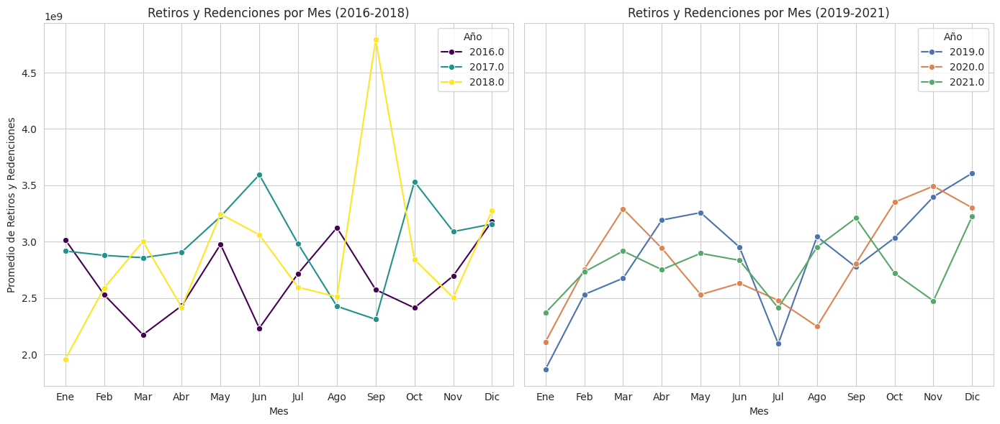